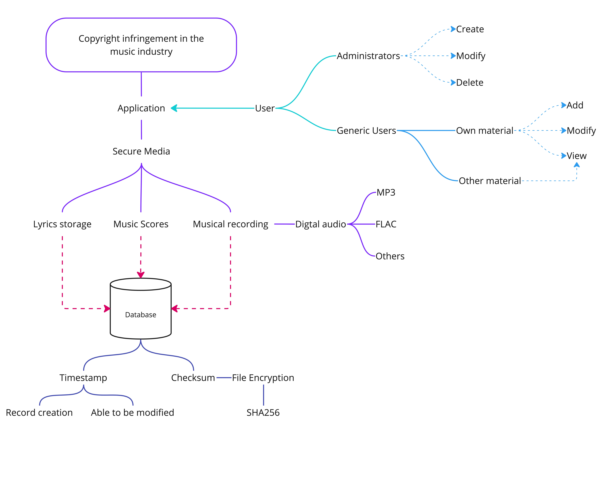
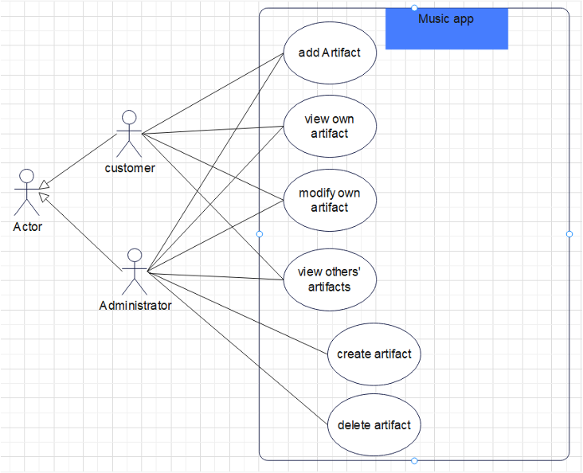
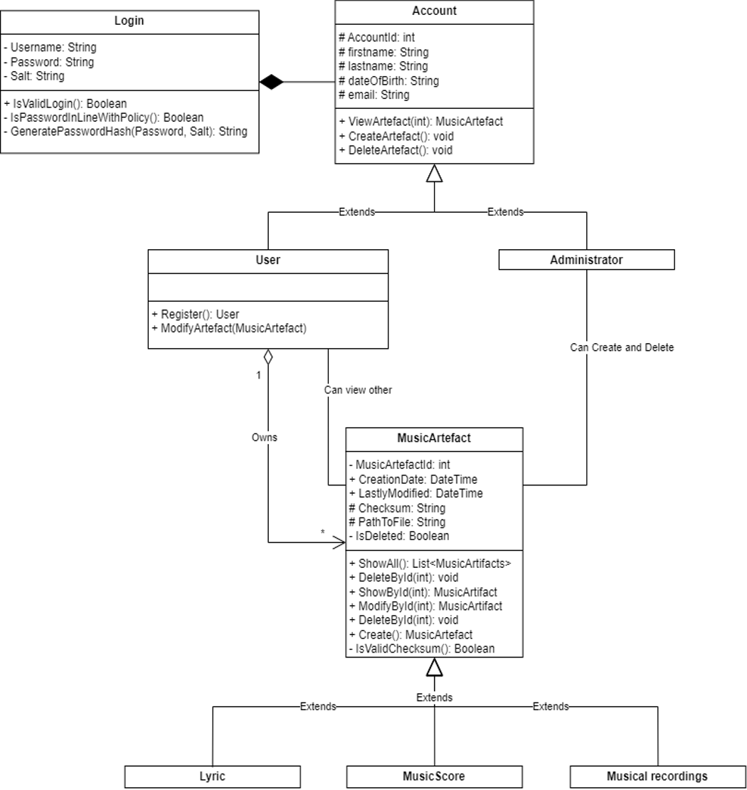
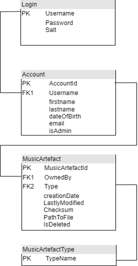
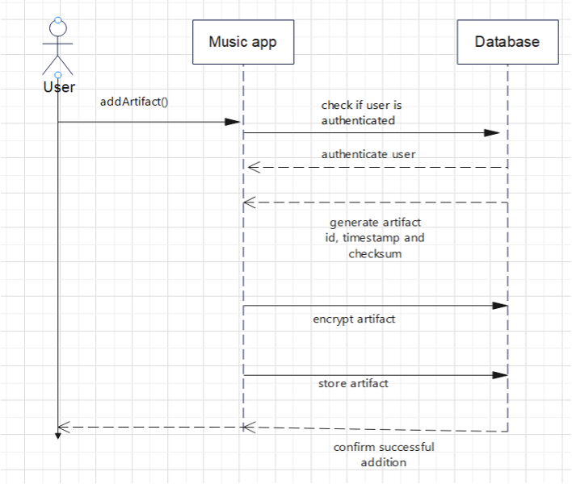

1. Introduction
This report aims to introduce an application specially crafted to provide a secure storage solution for musical recordings and lyrics. The application features a database designed to store all artefacts securely. The application will incorporate a unique feature that enables the creation of checksums and encryption of artefacts during storage, offering a mechanism for creating and storing timestamps, which can be utilized to document the artefacts' creation and modification dates and times.
In the context of digital music piracy, copyright infringement can manifest in numerous ways, including but not limited to copying music files onto CDs, establishing websites that provide unauthorized downloads of copyrighted material, and distributing music without compensating its rightful owners for licensing fees (Gateway, 2019).
2. UML Design Application
2.1. System Flowchart.
The flowchart provides valuable insight into explicating stakeholder requirements while simultaneously demonstrating the user-friendly integration of application elements.
Figure 1 is a system flowchart providing a general application overview (Miro, 2019).
The database must support digital music records, lyrics, and music scores and enforce role-based access control. To enhance security, an additional layer of encryption has been added.
2.2. UML Use Case Diagram
Figure 2 is a Use Case Diagram that effectively describes a system’s external behaviours in user terms (Visual Paradigm, 2019c).
Use case diagrams offer an overview of the application's actors and their interactions. The diagram visually represents the different actions or use cases that users can carry out within the system. Actors, as external entities, engage with the system. In this scenario, the two main actors are administrators and users/customers (Nishadha 2022).
2.3. UML Class Diagram
Figure 3 is a UML Class Diagram that aids developers in structuring the application based on class relationships (Visual Paradigm, 2019a).
Class diagrams represent an application's static view. Because they are the only diagrams that can be directly mapped to object-oriented languages, class diagrams are frequently utilized during the construction process.
Figure 4: Based on the domain class diagram in Figure 3, a normalized database design is proposed.
2.4. UML Sequence Diagram
Figure 5. is a Sequence Diagram illustrating object’s interaction during system operation (Visual Paradigm, 2019b).
3. Conclusion
According to Ren (2009), a sequence diagram is a tool that aids in prioritizing the timing of information exchange among objects or classes whilst also displaying the interaction of lifecycle among classes when an activity is implemented. The diagrams illustrate the scenario of adding an artefact and the sequence of messages exchanged between objects to achieve the desired outcome. The user’s authentication triggers the Music App to generate the Artefact ID, timestamps, and checksum for the new artefact. Subsequently, the artefact undergoes encryption before being stored in the database. Finally, the Music App sends a confirmation message to the user indicating the successful addition of the artefact. Specific security features, namely encryption and checksum generation, have significantly improved the security of many applications. These measures safeguard sensitive musical content from unauthorized access and tampering.
These diagrams present a comprehensive visualization of the application’s design, adhering to the UML standards and conventions whilst highlighting practical object-oriented design principles. However, a meticulous analysis must account for the trade-offs involved in design decisions. For instance, whilst security is paramount, it must be weighed against usability and performance considerations. Whilst the outlined design incorporates several advantageous features for securing and managing musical content, a critical analysis should also highlight potential drawbacks and areas for improvement, evincing a nuanced understanding of the design space and the underlying trade-offs.
UML diagrams adhere to standardized conventions, yet trade-offs such as security, usability and performance must be considered. Whilst the design may include advantageous features, critically appraising potential limitations and areas requiring improvement is essential.
Authors:
- Anja Kosar: anja-kosar.github.io
- Amrol Miah
- Mohammed Younes: my23007.github.io
- Wiley Finch: wileyeducational.github.io/eportfolio